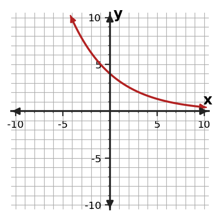
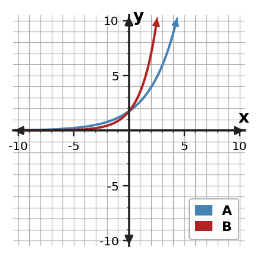

Station 1
Without graphing every point, identify the $y$-intercept of $f(x)=11(\frac{4}{3})^x$ and explain how you know.
For the basic exponential function $y=8(\frac{4}{3})^x$, state the horizontal asymptote and describe whether the graph reaches it.
State the domain and range of $f(x)=10(\frac{5}{3})^x$.
Use the graph to identify the $y$-intercept, describe the end behavior, and decide whether it shows exponential growth or decay.

Station 2
A student graphs $y=4(1.25)^x$ and draws the curve crossing the x-axis at $x=3$. Assess the description and name the exponential-graph feature that decides the issue.
Graphs A and B have the same positive initial value, but one uses factor 1.5 and the other uses factor 2. Which graph grows faster for positive $x$? Explain how the graph supports your answer.

Describe what happens to $f(x)=2(3)^x$ as $x$ becomes very large and as $x$ becomes very negative.
A bacteria culture is modeled by $P(t)=30(\frac{5}{4})^t$. Describe the graph’s initial value and long-term behavior in the context.
Station 3
For $f(x)=8(\frac{4}{3})^x$, complete a key-point table for $x=-1,0,1,2$. Use the points to describe the graph as growth or decay.
Make a small table of key points and sketch $y=5(\frac{5}{3})^x$. Label the $y$-intercept and horizontal asymptote.
Without graphing every point, identify the $y$-intercept of $f(x)=15(\frac{3}{2})^x$ and explain how you know.
For the basic exponential function $y=11(\frac{3}{2})^x$, state the horizontal asymptote and describe whether the graph reaches it.
Station 4
State the domain and range of $f(x)=12(\frac{4}{5})^x$.
Use the graph to identify the $y$-intercept, describe the end behavior, and decide whether it shows exponential growth or decay.

A student graphs $y=8(0.5)^x$ approaching but not touching the x-axis as x increases. Assess the description and name the exponential-graph feature that decides the issue.
Use the two exponential graphs to explain why sharing the same $y$-intercept does not mean two functions have the same growth rate.

Station 5
Describe what happens to $f(x)=11(\frac{5}{3})^x$ as $x$ becomes very large and as $x$ becomes very negative.
A savings balance is modeled by $B(t)=40(\frac{4}{3})^t$. Describe the graph’s initial value and long-term behavior in the context.
Solve $x^2-4x-5=0$ by completing the square.
Rewrite $y=x^2-8x+5$ in vertex form by completing the square, then state the vertex.
Station 6
Solve $(x-2)^2=9$ by using the square-root step that appears after completing the square.
For $f(x)=(x-1)(x-5)$, find the zeros and state the corresponding $x$-intercepts.
A monic quadratic has zeros $x=-5$ and $x=1$. Write the function in factored form and identify its $x$-intercepts.
The graph crosses the $x$-axis at $x=-2$ and $x=3$. Write a possible monic quadratic in factored form and explain how the factors encode the intercepts.

Station 1 Solutions
Without graphing every point, identify the $y$-intercept of $f(x)=11(\frac{4}{3})^x$ and explain how you know.
At $x=0$, the exponential factor is 1, so $f(0)=11$. The $y$-intercept is $(0,11)$.
For the basic exponential function $y=8(\frac{4}{3})^x$, state the horizontal asymptote and describe whether the graph reaches it.
The horizontal asymptote is $y=0$. The graph approaches the asymptote but does not reach or cross it.
Station 1 Solutions
State the domain and range of $f(x)=10(\frac{5}{3})^x$.
Domain: all real numbers. Range: $y\gt0$.
Use the graph to identify the $y$-intercept, describe the end behavior, and decide whether it shows exponential growth or decay.
The graph has a positive $y$-intercept, decreases toward $y=0$ to the right, and grows to the left; it shows exponential decay.
Station 2 Solutions
A student graphs $y=4(1.25)^x$ and draws the curve crossing the x-axis at $x=3$. Assess the description and name the exponential-graph feature that decides the issue.
Not reasonable. A basic positive exponential graph has horizontal asymptote $y=0$ and does not cross it.
Graphs A and B have the same positive initial value, but one uses factor 1.5 and the other uses factor 2. Which graph grows faster for positive $x$? Explain how the graph supports your answer.
The graph with factor 2 grows faster. It rises more steeply and its outputs separate increasingly from the factor-1.5 graph as $x$ increases.
Station 2 Solutions
Describe what happens to $f(x)=2(3)^x$ as $x$ becomes very large and as $x$ becomes very negative.
As $x\to\infty$, $f(x)$ grows without bound; as $x\to-\infty$, $f(x)$ approaches 0 from above.
A bacteria culture is modeled by $P(t)=30(\frac{5}{4})^t$. Describe the graph’s initial value and long-term behavior in the context.
The model starts at 30 when $t=0$ and grows increasingly rapidly as hours pass.
Station 3 Solutions
For $f(x)=8(\frac{4}{3})^x$, complete a key-point table for $x=-1,0,1,2$. Use the points to describe the graph as growth or decay.
| x | f(x) |
|---|---|
| -1 | $\displaystyle 6$ |
| 0 | $\displaystyle 8$ |
| 1 | $\displaystyle \frac{32}{3}$ |
| 2 | $\displaystyle \frac{128}{9}$ |
The graph shows growth.
Make a small table of key points and sketch $y=5(\frac{5}{3})^x$. Label the $y$-intercept and horizontal asymptote.
Useful points include $(-1,3)$, $(0,5)$, $(1,\frac{25}{3})$, $(2,\frac{125}{9})$. The $y$-intercept is $(0,5)$ and the horizontal asymptote is $y=0$.
Station 3 Solutions
Without graphing every point, identify the $y$-intercept of $f(x)=15(\frac{3}{2})^x$ and explain how you know.
At $x=0$, the exponential factor is 1, so $f(0)=15$. The $y$-intercept is $(0,15)$.
For the basic exponential function $y=11(\frac{3}{2})^x$, state the horizontal asymptote and describe whether the graph reaches it.
The horizontal asymptote is $y=0$. The graph approaches the asymptote but does not reach or cross it.
Station 4 Solutions
State the domain and range of $f(x)=12(\frac{4}{5})^x$.
Domain: all real numbers. Range: $y\gt0$.
Use the graph to identify the $y$-intercept, describe the end behavior, and decide whether it shows exponential growth or decay.
The graph has a positive $y$-intercept, approaches $y=0$ to the left, and rises rapidly to the right; it shows exponential growth.
Station 4 Solutions
A student graphs $y=8(0.5)^x$ approaching but not touching the x-axis as x increases. Assess the description and name the exponential-graph feature that decides the issue.
Reasonable. The described intercept and/or asymptote behavior matches the equation.
Use the two exponential graphs to explain why sharing the same $y$-intercept does not mean two functions have the same growth rate.
Both begin at the same initial value, but Graph B uses factor 2 while Graph A uses factor 1.5. Their outputs separate as $x$ increases, so the growth rates differ.
Station 5 Solutions
Describe what happens to $f(x)=11(\frac{5}{3})^x$ as $x$ becomes very large and as $x$ becomes very negative.
As $x\to\infty$, $f(x)$ grows without bound; as $x\to-\infty$, $f(x)$ approaches 0 from above.
A savings balance is modeled by $B(t)=40(\frac{4}{3})^t$. Describe the graph’s initial value and long-term behavior in the context.
The model starts at 40 when $t=0$ and grows increasingly rapidly as years pass.
Station 5 Solutions
Solve $x^2-4x-5=0$ by completing the square.
$(x-2)^2=9$, so $x=5$ or $x=-1$.
Rewrite $y=x^2-8x+5$ in vertex form by completing the square, then state the vertex.
$y=(x-4)^2-11$. The vertex is $(4,-11)$.
Station 6 Solutions
Solve $(x-2)^2=9$ by using the square-root step that appears after completing the square.
$x=5$ or $x=-1$.
For $f(x)=(x-1)(x-5)$, find the zeros and state the corresponding $x$-intercepts.
Zeros: $x=1$ and $x=5$; $x$-intercepts: $(1,0)$ and $(5,0)$.
Station 6 Solutions
A monic quadratic has zeros $x=-5$ and $x=1$. Write the function in factored form and identify its $x$-intercepts.
$f(x)=(x+5)(x-1)$; intercepts $(-5,0)$ and $(1,0)$.
The graph crosses the $x$-axis at $x=-2$ and $x=3$. Write a possible monic quadratic in factored form and explain how the factors encode the intercepts.
A possible function is $f(x)=(x+2)(x-3)$. Each factor is zero at one $x$-intercept.